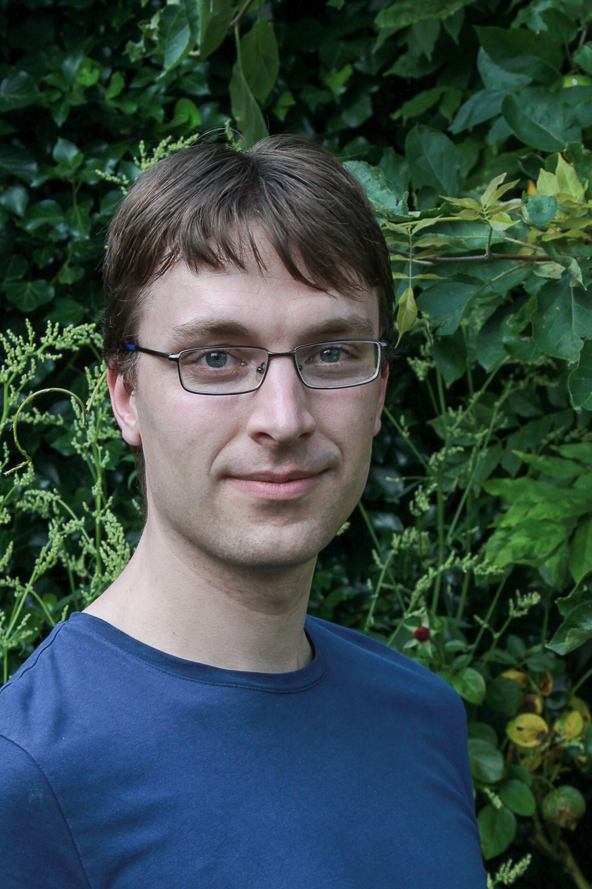

Floris van Doorn
e-mail: fpvdoorn@gmail.com
I am a postdoc at the mathematics department of the University of Paris-Saclay, working with Patrick Massot working on formalized mathematics in the Lean Theorem Prover. I am a maintainer of its mathematical library mathlib, and currently my main project is the sphere eversion project.
Until summer 2021, I was a postdoc at the mathematics department of the University of Pittsburgh, working with Tom Hales on the Formal Abstracts and Flypitch projects. I did my PhD at Carnegie Mellon University under supervision of Jeremy Avigad and Steve Awodey. My dissertation is titled On the Formalization of Higher Inductive Types and Synthetic Homotopy Theory. Full CV (pdf).
Research
I formalize mathematical results and develop new tools for the Lean Theorem prover.
I am a contributor an maintainer of mathlib.
I have formalized results from many areas of mathematics,
including measure theory, set theory, model theory and combinatorics.
Together with Jesse Michael Han
I formalized the independent of the continuum hypothesis in the
Flypitch project, which was one of the few remaining
unformalized problems on Freek Wiedijk's list.
The proof required formalizing an internal model of set theory in Lean, and formalizing a notion of forcing.
We used Boolean-valued forcing for our proof.
I also formalized another problem on Wiedijk's list, proving that it is impossible
to partition a cube into finitely many smaller cubes.
Recently I have formalized quite some measure theory, including the Haar measure and
Fubini's theorem for the Bochner integral.
I have furthermore worked on various tactics, tools and programs to aid formalization in Lean.
I am interested in Homotopy Type Theory (HoTT),
which is a connection between homotopy theory and type theory,
where one interprets the basic concepts in the logic of type theory in a geometric way.
Using this interpretation you can define many concepts of algebraic topology,
like homotopy and (co)homology groups synthetically into the type theory.
Since the homotopy theoretic definitions are very close to the logical foundations, it
is feasible to formalize many of these results in a proof assistant, without being much more effort than proving these results on paper.
I have formalized a lot of Homotopy Type Theory in
the HoTT library for Lean 2
and in the
Spectral Sequence project,
I was the main author of both.
My main interest in this field is synthetic homotopy theory,
which is the study of types as spaces in algebraic topology.
My main contribution was to give a synthetic defintion of the (cohomological) Serre and
Atiyah-Hirzebruch Spectral sequences in Lean.
I have also studied the research question of which higher inductive types can be constructed
from ordinary inductive types and one simple higher inductive type,
the homotopy pushout.
Publications
- Jeremy Avigad, Floris van Doorn. Progress on a Perimeter Surveillance Problem, ICAS 2021: International Conference on Autonomous Systems. (arXiv, conference proceedings (pdf))
- Floris van Doorn. Formalized Haar Measure, ITP 2021: Interactive Theorem Proving. (arXiv, Formalization is part of mathlib)
- Floris van Doorn, Gabriel Ebner, and Robert Y. Lewis. Maintaining a Library of Formal Mathematics, CICM 2020: 13th Conference on Intelligent Computer Mathematics. (arXiv)
- Kristina Sojakova, Floris van Doorn, Egbert Rijke. Sequential Colimits in Homotopy Type Theory, LICS 2020: Thirty-Fifth Annual ACM/IEEE Symposium on Logic in Computer Science. (Formalization (Github))
- The mathlib Community. The Lean Mathematical Library,
CPP 2020: Certified Programs and Proofs.
(arXiv, Website, Formalization (Github))
- Jesse Michael Han, Floris van Doorn. A Formal Proof of the Independence of the Continuum Hypothesis,
CPP 2020: Certified Programs and Proofs.
arXiv, Website,
Formalization (Github))
- Jesse Michael Han, Floris van Doorn. A Formalization of Forcing and the Unprovability of the Continuum Hypothesis,
ITP 2019: Interactive Theorem Proving. (arXiv,
Website,
Formalization (Github))
- Ulrik Buchholtz, Floris van Doorn, Egbert Rijke. Higher Groups in Homotopy Type Theory,
Logic in Computer Science (LICS) 2018.
(arXiv,
slides,
Formalization (Github))
- Floris van Doorn, Jakob von Raumer, Ulrik Buchholtz. Homotopy Type Theory in Lean,
8th International Conference on Interactive Theorem Proving (ITP), 2017.
(arXiv, slides,
Lean-HoTT library (Github),
Spectral repository (Github))
- Floris van Doorn. Constructing the Propositional Truncation using Non-recursive HITs,
Certified Proofs and Programs (CPP), 2016.
(arXiv,
slides,
Lean source (Github))
- Leonardo de Moura, Soonho Kong, Jeremy Avigad, Floris van Doorn, Jakob von Raumer.
The Lean Theorem Prover (System Description),
International Conference on Automated Deduction (CADE-25), 2015.
- Cody Roux and Floris van Doorn.
The Structural Theory of Pure Type Systems,
Types and Lambda Calculi and Applications (TLCA), 2014.
(slides)
- Floris van Doorn, Herman Geuvers, Freek Wiedijk,
Explicit Convertibility Proofs in Pure Type Systems,
Logical Frameworks and Meta-Languages: Theory and Practice (LFMTP), 2013.
(slides, Coq formalization)
Selected Talks
Talks corresponding to one of my papers are listed under Publications.
- Formalizing mathematics in Lean, November 2021.
Laboratoire Méthodes Formelles.
(slides)
- Automating Concept Equivalence in Dependent Type Theory, September 2021.
6th Conference on Artificial Intelligence and Theorem Proving (AITP), online
(slides, video starts around 2:19:00).
- Structures and Classes, July 2020.
Lean for the curious mathematician, online. (video 1, video 2)
- Tactics in Lean, February 2020.
HCM Workshop: Mathematical Language and Practical Type Theory.
(slides)
- Lean Tactics, January 2020.
Formal Methods in Mathematics / Lean Together, Pittsburgh.
- A Formal Abstract of the Classification of Finite Simple Groups, June 2019.
Vietnam — USA Joint Mathematical meeting 2019.
(slides)
- Towards Spectral Sequences for Homology, November 2018.
Homotopy Type Theory Electronic Seminar Talks, online.
(slides, video)
- Formal Abstracts, August 2018.
Dagstuhl seminar: Formalization of Mathematics in Type Theory. (slides)
- Spectral Sequences in Homotopy Type Theory, June 2018.
Workshop: Types, Homotopy Type theory, and Verification,
Hausdorff Research Institute for Mathematics, Bonn. (slides)
- Formalized Spectral Sequences in Homotopy Type Theory, September 2017. Algebra, Combinatorics,
and Geometry seminar, University of Pittsburgh. (slides talk 1, slides talk 2)
- Homotopy Type Theory in Lean, July 2017.
Computer-aided mathematical proof, Cambridge.
(Aimed at people familiar with formalization, but not necessarily HoTT)
(slides, video)
- The Lean HoTT Library, July 2017.
Big Proof, Cambridge.
(Aimed at people familiar with HoTT)
(slides, video)
- Eilenberg-MacLane Spaces in Homotopy Type Theory, March 2017,
ASL 2017 North American meeting.
(slides)
- Homotopy Type Theory in Lean, June 2016,
HoTT/UF Workshop colocated with
FSCD.
(slides)
- Reducing Higher Inductive Types to Quotients, May 2016,
HoTT Workshop in Toronto.
(slides,
video)
- The Lean Theorem Prover and Homotopy Type Theory, May 2016 (with Jeremy Avigad),
HoTT Workshop in Toronto.
(slides,
video)
Unpublished Work
- Floris van Doorn. On the Formalization of Higher Inductive Types and Synthetic Homotopy Theory,
Dissertation. Committee: Jeremy Avigad, Steve Awodey, Ulrik Buchholtz and Mike Shulman.
- Jeremy Avigad, Robert Y. Lewis, Floris van Doorn.
Logic and Proof.
Lecture notes for the course Logic and Mathematical Inquiry (Interactive version)
- Floris van Doorn. The Lean Theorem Prover, 2 December 2015.
- Floris van Doorn. Constructing the Propositional Truncation using Nonrecursive HITs, 28 July 2015.
- Short notes on the Applications of the Serre Spectral Sequence, November 2015.
- Floris van Doorn. Propositional Calculus in Coq,
arXiv:1503.08744, 9 May 2014.
- Floris van Doorn. Explicit Convertibility Proofs in Pure Type Systems,
Master thesis. Advisor: Freek Wiedijk.
Teaching
University of Pittsburgh
- Spring 2021: Abstract Algebra (Math 1250).
- Spring 2020: Topics in Geometry (Math 1290).
- Spring 2019: Calculus I (Math 0220).
Carnegie Mellon University
Utrecht University